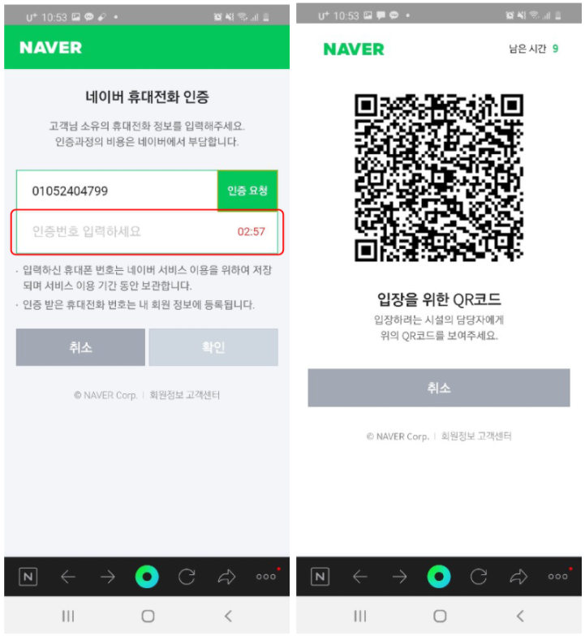
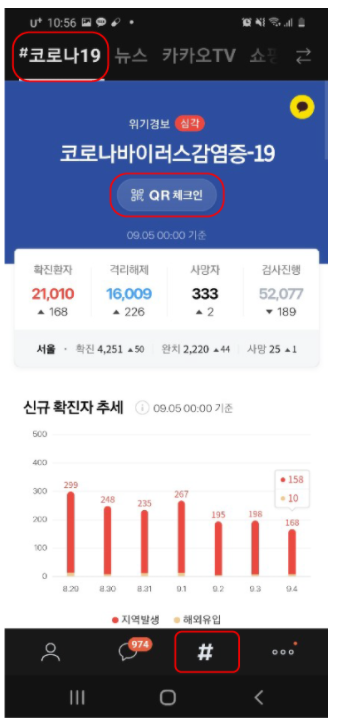
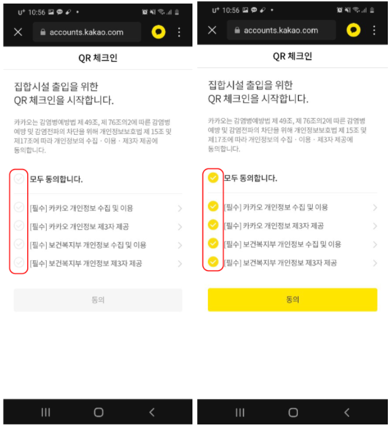
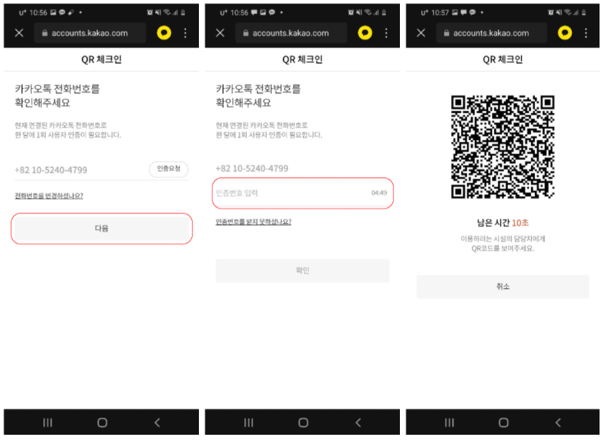

How to use QR code check-in at high-risk areas.
Starting from June 10th, in order to enter high-risk areas( such as bars, entertainment
facilities ,etc) , visitors must present their QR code Id using Naver or Kakaotalk.
This is due to the sudden spread of the corona virus that started from the Itawon clubs.
The Qr code itself is easy to make as long as you have a smartphone with either the Naver app
or the kakaotalk app. These two are the only apps that currently support the KI-Pass(the official
name of the qr code) so you must have at least one of these apps with a working id to freely enter certain places in Korea. The codes itself is used to backtrack visitors that have entered places where those who have been infected with the corona virus have entered. Using the information, the South Korean government will try to prevent the spread of the virus to the best they can.
1. Open the naver app.
2. Log into your id.
3. Press the top left side with the three lines that are on top of each other (personal menu button)
4. After entering, press the button which says QR 체크인 on the top right.
5. Agree to all the things stated there (agreeing to all is necessary) and press next.

6. If it’s your first time doing this, you will be asked to enter your phone number and enter the certification number sent to you by text message.
7. After that show it to the employee at the place you are trying to enter.
1. Press the # button on the button (second from right).
2. Press the “#코로나19” on the top right and then press the “QR 체크인” in the middle.
3. Agree to all the things stated there and press “agree” on the bottom.
4. Show the code to the employee at the place you are trying to enter.
# Everything written above is based on the facts gathered on August 26th. Details may change based on the governments orders or the changes in the app itself.
# The QR code id’s is for single use only ; you will receive a new QR Id every time and must receive a new one as each QR code given to you only lasts 15 seconds for the employees to check.